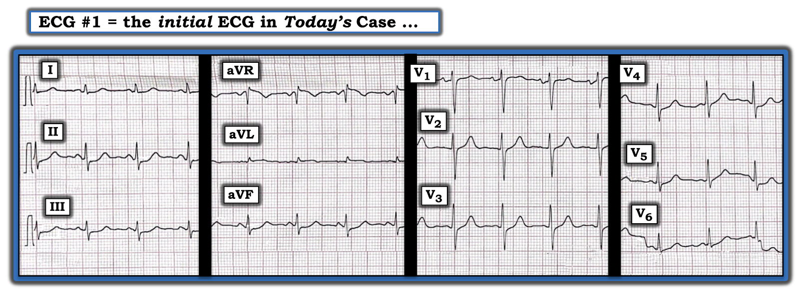
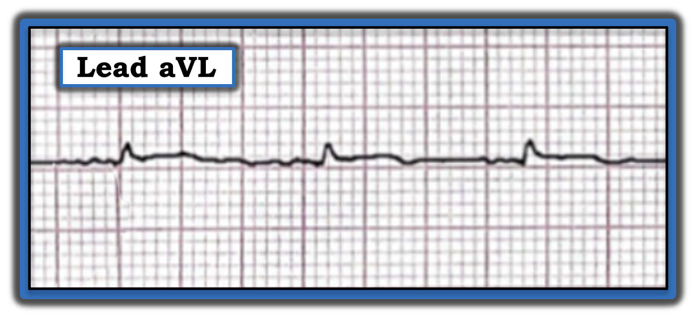
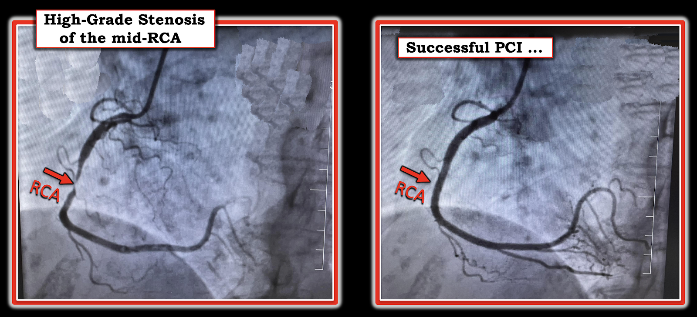

ECG Blog #325 — Một phụ nữ ngoài 50 tuổi đau ngực
BẠN sẽ đọc điện tâm đồ ở Hình-1 như thế nào — NẾU được cho biết người phụ nữ trung niên này đang bị khó chịu ở ngực?
- Bạn có nên kích hoạt phòng thông tim (cath lab) không?


SUY NGHĨ CỦA TÔI về điện tâm đồ ở Hình-1:
Nhịp xoang, tần số ~90/phút. Tất cả các khoảng (PR, QRS, QTc) và trục mặt phẳng trán đều bình thường. Không có lớn buồng tim.
Về Thay đổi Q-R-S-T:
- Không có sóng Q.
- Tăng tiến sóng R (R wave progression) bình thường. Vùng chuyển tiếp (nơi sóng R trở nên cao hơn độ sâu của sóng S) — xảy ra bình thường giữa chuyển đạo V3 và V4.
Về Thay đổi ST-T:
Có ST chênh lên kín đáo nhưng thật sự ở chuyển đạo aVL. Lý do khó nhận ra điều này — là biên độ QRS ở chuyển đạo aVL rất nhỏ. Nhưng hình dạng đoạn ST thì chắc chắn là dạng vòm (coving) và chênh lên trên đường nền (Hình-2).
- Chuyển đạo còn lại có ST chênh lên ở Hình-1 là chuyển đạo aVR.
- Ngoài ra — có ST chênh xuống kín đáo nhưng thật sự ở không dưới 8/12 chuyển đạo (tức là các chuyển đạo I,II,III,aVF; và V3 đến V6).
- Mức ST chênh xuống có vẻ lớn nhất ở các chuyển đạo dưới (II,III,aVF) — nơi thấy rõ đoạn ST thẳng đuỗn (ST straightening), cùng với chênh xuống.
- LƯU Ý: Mặc dù không có ST chênh lên ở chuyển đạo V2 — bình thường chuyển đạo này có ST chênh lên nhẹ. Vì vậy — việc điểm J hoàn toàn không chênh lên ở chuyển đạo V2 có thể cho thấy đã có một mức chênh xuống so với đường nền ST-T vốn thường hơi chênh lên.


Tổng hợp lại tất cả:
Trước đây tôi đã điểm lại cách dùng tối ưu chuyển đạo aVL để dự đoán động mạch "thủ phạm" khi có ST chênh lên ở chuyển đạo này (Xem ECG Blog #324).
- Khi ST chênh lên chỉ đơn độc ở chuyển đạo aVL — tắc cấp động mạch mũ trái LCx (Left Circumflex) trở thành nghi phạm hàng đầu là động mạch "thủ phạm" (đặc biệt là tắc nhánh bờ tù (obtuse marginal) thứ 1).
- Một khả năng khác — đây có thể là tắc cấp nhánh chéo (Diagonal) thứ 1 hoặc thứ 2, dù điều này có vẻ ít khả năng hơn vì không có ST chênh lên ở chuyển đạo V2. Dù vậy — bệnh nhân trong ECG Blog #324 có ST chênh lên đơn độc ở chuyển đạo aVL (không có chút ST chênh lên nào ở chuyển đạo V2) — nên ngoại lệ vẫn tồn tại.
- Sẽ không nghĩ đến tắc cấp LAD khi nhìn điện tâm đồ ở Hình-1 — vì không có ST chênh lên ở bất kỳ chuyển đạo trước ngực nào.
- HOẶC — "một điều gì khác" có thể đang diễn ra (tức là nhồi máu cũ, một biến thể giải phẫu, một kiểu tuần hoàn bàng hệ bất thường).
Còn ST chênh xuống ở 8/12 chuyển đạo thì sao?
Nhận ra hình ảnh điện tâm đồ có ST chênh xuống lan tỏa (thường có ở ít nhất 7-8 chuyển đạo) + ST chênh lên ở chuyển đạo aVR (và đôi khi ở chuyển đạo V1) — phải ngay lập tức gợi ý các chẩn đoán phân biệt sau:
- Bệnh mạch vành nặng (do tổn thương thân chung động mạch vành trái (LMain), LAD đoạn gần, và/hoặc bệnh 2 hoặc 3 thân nặng) — mà trong bối cảnh lâm sàng phù hợp có thể chỉ ra hội chứng vành cấp ACS (Acute Coronary Syndrome).
- Thiếu máu cục bộ dưới nội tâm mạc do một nguyên nhân khác (tức là loạn nhịp nhanh kéo dài; ngừng tim; sốc/tụt huyết áp nặng; xuất huyết tiêu hóa; thiếu máu; "bệnh nhân nặng", v.v.).
- Xin nhấn mạnh: Hình ảnh thiếu máu cục bộ dưới nội tâm mạc lan tỏa này không gợi ý tắc động mạch vành cấp (tức là nó không phải hình ảnh của nhồi máu cơ tim cấp) — mà là thiếu máu cục bộ do các chẩn đoán phân biệt nêu trên!
ĐIỀU CỐT LÕI: Bệnh sử chúng tôi được cung cấp — là người phụ nữ trung niên này bị khó chịu ở ngực kèm điện tâm đồ như ở Hình-1. Dù có khả năng ST chênh lên kín đáo đơn độc ở chuyển đạo aVL là biểu hiện của tắc cấp LCx — điện tâm đồ ban đầu này chưa mang tính quyết định.
- Điều chắc chắn — là ở bệnh nhân trung niên có đau ngực mới xuất hiện này, sự hiện diện của đoạn ST thẳng đuỗn, với ít nhất một mức ST chênh xuống ở 8/12 chuyển đạo + ST chênh lên ở chuyển đạo aVR — phải được hiểu là thiếu máu cục bộ dưới nội tâm mạc cho đến khi chứng minh được điều ngược lại.
- Bệnh nhân hôm nay cần được thăm dò thêm để loại trừ biến cố tim cấp (tức là làm lại điện tâm đồ, troponin nhiều lần, siêu âm tim (Echo) trong lúc đau ngực — tìm rối loạn vận động thành khu trú).
- Ngay cả khi troponin âm tính và không thấy tiêu chuẩn STEMI rõ ràng trên các điện tâm đồ theo dõi — NẾU vẫn còn đau ngực — thì vẫn có chỉ định thông tim để làm rõ giải phẫu (Xem ECG Blog #193 — về tầm quan trọng của việc nhận ra OMI khi điện tâm đồ không đạt tiêu chuẩn STEMI).
DIỄN TIẾN của CA:
Bản ghi hôm nay được gửi cho tôi. Sau đó tôi được biết thêm một số chi tiết về ca này:
- Bệnh nhân là một phụ nữ trung niên trước đây khỏe mạnh, không có yếu tố nguy cơ tim mạch đáng kể. Lần đầu bà đến khoa cấp cứu (ED) vì đau ngực và khó thở khi gắng sức, xảy ra vài tháng trước điện tâm đồ ở Hình-1. Đánh giá tại khoa cấp cứu cho thấy các điện tâm đồ giống bản ghi hôm nay — với troponin nhiều lần bình thường và không có rối loạn vận động thành trên siêu âm tim. Khi đó không có chỉ định thông tim.
- Nhìn chung bệnh nhân ổn định trong vài tháng — nhưng sau đó lại có thêm một đợt đau ngực và khó thở khi gắng sức. Một lần nữa — troponin âm tính và siêu âm tim không thấy rối loạn vận động thành. Triệu chứng của bệnh nhân hết — và điện tâm đồ ở Hình-1 được ghi vào lúc đó. Vì triệu chứng tái phát, và ST chênh xuống lan tỏa trên điện tâm đồ — đã quyết định thông tim để làm rõ giải phẫu.
- Kết quả thông tim được trình bày ở Hình-3.
CÂU HỎI:
- Bạn có thể giải thích các phát hiện khi thông tim ở Hình-3 — dựa trên bệnh sử của bệnh nhân này và điện tâm đồ ở Hình-1 không?


SUY NGHĨ CỦA TÔI về CA này:
Tôi đã không nghĩ sẽ thấy bệnh một thân ở RCA. Tổn thương này sẽ không được dự đoán là gây ra ST chênh lên kín đáo đơn độc ở chuyển đạo aVL. Khi ST chênh xuống lan tỏa là hậu quả của thiếu máu cục bộ — nó thường chỉ ra hoặc bệnh nhiều thân — hoặc tổn thương thân chung trái (LMain) hoặc tổn thương LAD đoạn gần.
- Troponin âm tính — và siêu âm tim không phát hiện rối loạn vận động thành khu trú trong cả 2 lần bệnh nhân được đánh giá.
- Có lẽ bệnh nhân đã từng bị nhồi máu cơ tim thành dưới trước đây? (tức là đã tự tái tưới máu, nhưng vẫn còn chỗ hẹp nặng đoạn giữa RCA thấy được khi thông tim?).
- HOẶC — Có lẽ tổn thương hẹp nặng đoạn giữa RCA đã làm giảm dòng chảy vành đủ để gây các đợt đau thắt ngực khi gắng sức — nhưng siêu âm tim không được làm trong lúc đau ngực (tức là siêu âm tim chỉ có giá trị loại trừ biến cố tim cấp NẾU không có rối loạn vận động thành và siêu âm được làm trong một đợt đau ngực).
- ĐIỀU CỐT LÕI: Dù tôi không thể giải thích trọn vẹn kết quả thông tim của bệnh nhân hôm nay dựa trên bệnh sử và các dấu hiệu điện tâm đồ — quyết định đưa ra là đúng. Bệnh nhân này đau ngực khi gắng sức kèm điện tâm đồ bất thường gợi ý mạnh bệnh mạch vành. Khi troponin và siêu âm tim không phát hiện gì — cần thông tim để xác định giải phẫu.
=======================================
LỜI CẢM ƠN: Xin cảm ơn Nelson Nersisyan (ở Yerevan, Armenia) đã chia sẻ ca bệnh và bản ghi này.
=======================================
Các bài ECG Blog liên quan đến ca hôm nay:
- ECG Blog #205 — Điểm lại Cách tiếp cận hệ thống của tôi khi đọc điện tâm đồ 12 chuyển đạo.
- ECG Blog #193 — minh họa cách dùng nghiệm pháp soi gương (Mirror Test) để dễ nhận ra nhồi máu cơ tim thành sau cấp. Bài này điểm lại những điều cơ bản để dự đoán động mạch "thủ phạm".
- ECG Blog #320 — Điểm lại hình ảnh điện tâm đồ điển hình để nhận ra nhánh chéo thứ 1 hoặc thứ 2 (Diagonal) là "thủ phạm" (tức là dấu hiệu "Cờ Nam Phi" (South African Flag)).
- ECG Blog #324 — một ví dụ khác về ST chênh lên đơn độc ở chuyển đạo aVL (ở đây do OMI cấp của nhánh chéo thứ 1).
- ECG Blog #285 — một ví dụ khác về nhồi máu cơ tim thành sau cấp (với dương tính nghiệm pháp soi gương).
- ECG Blog #246 — một ví dụ khác về nhồi máu cơ tim thành sau cấp (với dương tính nghiệm pháp soi gương).
- ECG Blog #80 — điểm lại cách dự đoán động mạch "thủ phạm" (và đưa thêm một ca minh họa nghiệm pháp soi gương để chẩn đoán nhồi máu cơ tim thành sau cấp).
- ECG Blog #184 — minh họa mối quan hệ đối nghịch như soi gương "kỳ diệu" khi thiếu máu cục bộ cấp giữa chuyển đạo III và chuyển đạo aVL (được trình bày trong Audio Pearl #2 của bài này).
- ECG Blog #167 — một ca khác về mối quan hệ đối nghịch như soi gương "kỳ diệu" giữa chuyển đạo III và chuyển đạo aVL đã xác nhận OMI cấp.
- ECG Blog #228 — Điểm lại khái niệm nhồi máu cơ tim "thầm lặng" (Silent MI) (kèm một Audio Pearl về chủ đề này).
- ECG Blog #271 — Điểm lại cách xác định đường nền đoạn ST (kèm bàn luận về thực thể thiếu máu cục bộ dưới nội tâm mạc lan tỏa).
- ECG Blog #266 — Điểm lại cách phân biệt nhồi máu cơ tim thành sau với sóng T de Winter (với phần cuối sóng T dương ở các chuyển đạo trước phản ánh sóng T "tái tưới máu").
- ECG Blog #258 — Cách "định tuổi" một ổ nhồi máu dựa trên điện tâm đồ ban đầu.